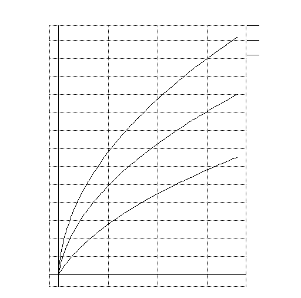

Week #1: Wafer Clean and Oxidation (Oct 3, 1995)
- A. Starting Materials
- 1) Tuesday Group: EIGHT Silicon, Boron Doped Wafers
- Manufacturer: Cemat-Silicon S.A.
- Diameter: 3" (76 +/- 0.5 mm)
- Thickness: 13-17 mils (331 to 431 um)
- Doping: P-type (Boron) 10^16 cm^-3
- Orientation: <100> +/- 5 degrees, float-zone or Czochralski
- Resistivity: 1-10 Ohm cm
- P.O. #: P16 0382
- Order #: 32371/00
- Lot #: 3199
- Date of Manufacture: 10/93
- 2) Wednesday Group: EIGHT Silicon, Boron Doped Wafers
- Manufacturer: Cemat-Silicon S.A.
- Diameter: 3" (76 +/- 0.5 mm)
- Thickness: 13-17 mils (330 to 430 um)
- Doping: P-type (Boron) 10^16 cm^-3
- Orientation: <100> +/- 5 degrees, float-zone or Czochralski
- Resistivity: 3-10 Ohm cm
- P.O. #:
- Order #:
- Lot #: 374
- Date of Manufacture: 04/28/95
- B. RCA Cleaning Process - Remove Surface Contaminants
- 1) Series of six baths (RCA Clean)
- 4:1:1 DI:NH4OH:H2O2 @ 75C -> 5 minutes
- Cascade Rinse with DI 4min -> 2 min -> 1 min
- 50:1 DI:HF @ room temp -> 30 sec
- Cascade Rinse with DI 4min -> 2 min -> 1 min
- 4:1:1 DI:HCl:H202 @ 75C -> 5 minutes
- Cascade Rinse with DI 4min -> 2 min -> 1 min
- 2) Nitrogen Gas Spray Drying
- C. Oxidation Process - grow ~1 micron SiO2 layer on base
- 1) Wet Oxidation Furnace
(Thermco Ana-Lock Controllers)
- 2 hours at 1100 C (1/2 hr to heat up, 1 hour to cool down)
- FLOOPS Simulation Graph
- FLOOPS Simulation Source Code
- 2) Cool Wafers at 400C overnight
- D. Measure Oxide Thickness
- 1)
Optical Ellipsometer (Gaertner Scientific Corp)
- Measured center, right, left, top at 2 wavelengths each
- Oxide Thickness Table Avg: c=10,022A, r=10066A, l=10051A, t=10179

Wafer # Center Right Left Top
7 9879A, 9988A 9880A/9986A 9879A/10025A 9828A/9966A
Note: thicknesses are given in pairs, one for each wavelength
Right Left Top